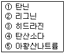
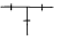
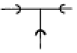
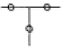

공조냉동기계기능사 (2005-07-17 기출문제)
1과목: 공조냉동안전관리
1. 보일러 운전상의 장애로 인한 역화(back fire)의 방지 대책으로 옳지 않은 것은?
- 점화방법이 좋아야 하므로 착화를 느리게 한다.
- 공기를 노내에 먼저 공급하고 다음에 연료를 공급한다.
- 노 및 연도 내에 미연소 가스가 발생하지 않도록 취급에 유의한다.
- 점화시 댐퍼를 열고 미연소 가스를 배출시킨 뒤 점화한다.
(정답률: 75%)

2. 냉동기 운전 중 토출압력이 높아져 안전장치가 작동하거나 냉매가 유출되는 사고시 점검하지 않아도 되는 것은?
- 계통 내에 공기혼입 유무
- 응축기의 냉각수량, 풍량의 감소여부
- 응축기와 수액기간, 균압관의 이상여부
- 흡입관 여과기 막힘 유무
(정답률: 39%)
3. 보일러수를 탈 산소할 목적으로 사용하는 약제로 묶여진 것은?

- ① - ② - ③
- ① - ④ - ⑤
- ① - ③ - ⑤
- ① - ③ - ④
(정답률: 48%)
4. 다음 중 공구별 역할을 바르게 나타낸 것은?
- 펀치 : 목재나 금속을 자르거나 다듬는다.
- 니퍼 : 금속편을 물려서 잡고 구부리고 당긴다.
- 스패너 : 볼트나 너트를 조이고 푸는데 사용한다.
- 소켓렌치 : 금속이나 가스켓류 등에 구멍을 뚫는다.
(정답률: 78%)
5. 작업장에서 계단을 설치할 때 옳지 않은 것은?
- 계단 하나하나의 넓이를 동일하게 하지 않아도 된다.
- 경사가 완만하여야 한다.
- 손잡이를 설치하여야 한다.
- 견고하고 튼튼한 구조라야 한다.
(정답률: 88%)
6. 정전기의 제거 방법으로 적당치 않는 것은?
- 설비 주변에 적외선을 쪼인다.
- 설비 주변의 공기를 가습한다.
- 설비의 금속 부분을 접지 한다.
- 설비에 정전기 발생 방지 도장을 한다.
(정답률: 72%)
7. 후레온 냉동장치를 능률적으로 운전하기 위한 대책이 아닌 것은?
- 이상고압이 되지 않도록 주의한다.
- 냉매부족이 없도록 한다.
- 습압축이 되도록 한다.
- 각부의 가스 누설이 없도록 유의한다.
(정답률: 86%)
8. NH3의 누설 검사와 관련이 없는 것은?
- 붉은 리트머스 시험지를 물에 적셔 누설 개소에 대면 청색으로 변한다.
- 유황초에 불을 붙여 누설 개소에 대면 백색 연기가 발생한다.
- 브라인에 NH3 누설 시에는 네슬러시약을 사용하면 다량 누설시 자색으로 변한다.
- 페놀프탈렌지를 물에 적셔 누설 개소에 대면 청색으로 변한다.
(정답률: 49%)
9. 아크용접기의 2차 무부하 전압을 일정하게 유지시켜 감전 사고를 예방하기 위해 부착하는 것은?
- 2차 권선장치
- 자동전격방지장치
- 접지케이블장치
- 리미트스위치
(정답률: 66%)
10. 아크 용접 작업시 주의할 사항으로 틀린 것은?
- 우천시 옥외 작업을 금한다.
- 눈 및 피부를 노출시키지 않는다.
- 용접이 끝나면 반드시 용접봉을 빼어 놓는다.
- 장소가 협소한 곳에서는 전격 방지기를 설치하지 않는다.
(정답률: 89%)
11. 줄을 사용할 때 주의점이 아닌 것은?
- 오일에 담근 후 사용한다.
- 연한 재료부터 사용한다.
- 무리한 힘을 가하지 않는다.
- 경도가 작은 재료에 사용한다.
(정답률: 79%)
12. 안전관리의 제반 활동사항에 관한 내용 중 거리가 먼 것은?
- 산업체에서 일어날 수 있는 재해의 원인을 찾아내고 그 원인을 제거한다.
- 재해로부터 인명과 재산을 보호하기 위한 제반 안전 활동을 한다.
- 재해로부터 오는 손실을 제거하여 기업의 이윤을 증대 시킨다.
- 안전사고의 범위에는 천재지변으로 인하여 발생한 것도 포함된다.
(정답률: 54%)
13. 보호구의 착용작업과 착용보호구가 서로 잘못 연결된 것은?
- 전락 등 위험방지 - 안전화
- 용접 등의 작업 - 보안경
- 전기공사시 감전방지 - 활선 작업용 보호구
- 추락, 벌목, 하역작업 - 안전모
(정답률: 44%)
14. 보일러 파열사고 원인 중 가장 빈번히 일어나는 것은?
- 강도부족
- 압력초과
- 부식
- 그루빙
(정답률: 67%)
15. 안전화가 갖추어야 할 조건으로 틀린 것은?
- 내유성
- 내열성
- 누전성
- 내마모성
(정답률: 48%)
2과목: 냉동기계
16. 증발식 응축기에 관한 사항 중 옳은 것은?
- 응축온도는 외기의 건구온도 보다 습구 온도의 영향을 더 많이 받는다.
- 냉각수의 현열을 이용하여 냉매가스를 응축 시킨다.
- 응축기 냉각관을 통과하여 나오는 공기의 엔탈피는 감소한다.
- 냉각관내 냉매의 압력강하가 작다.
(정답률: 52%)
17. 프레온 냉동장치에서 유분리기를 설치하는 경우로 틀린 것은?
- 만액식 증발기를 사용하는 장치의 경우
- 증발온도가 높은 저온장치의 경우
- 토출가스 배관이 길어진다고 생각되는 경우
- 토출가스에 다량의 오일이 섞여 나간다고 생각되는 경우
(정답률: 33%)
18. 냉동기 운전 중 수냉식 응축기의 파열을 방지하기 위한 부속기기에 해당되지 않는 것은?
- 냉각수 플로우 스윗치(온도)
- 냉각수 플로우 스윗치(압력)
- 차압 스위치
- 유압 보호장치
(정답률: 43%)
19. 다음 동파이프에 대한 설명으로 틀린 것은?
- 가공이 쉽고 얼어도 다른 금속보다 파열이 쉽게 되지 않는다.
- 내식성이 좋으며 수명이 길다.
- 연관이나 철관보다 운반이 쉽다.
- 마찰저항이 크다.
(정답률: 58%)
20. 온도작동식 자동팽창 밸브에 대한 설명이다. 옳은 것은?
- 실온을 써어모 스탯에 의하여 감지하고, 밸브의 개도를 조정한다.
- 팽창밸브 직전의 냉매온도에 의하여 자동적으로 개도를 조정한다.
- 증발기 출구의 냉매온도에 의하여 자동적으로 개도를 조정한다.
- 팽창밸브를 통하는 냉매온도에 의하여 자동적으로 개도를 조정한다.
(정답률: 50%)
21. 냉동장치는 냉매의 어떤 열을 이용하여 냉동 효과를 얻는가?
- 승화열
- 기화열
- 융해열
- 응고열
(정답률: 39%)
22. 증발기의 설명 중 틀린 것은?
- 건식 증발기는 냉매량이 적어도 되는 이익이 있고, 후 레온과 같이 윤활유를 용해하는 냉매에 있어서는 유가 압축기에 들어가기 쉽다.
- 만액식 증발기는 냉매측에 열전달율이 양호하므로 주로 액체 냉각용에 사용한다.
- 만액식 증발기에 후레온을 냉매로 하는 것은 압축기에 유를 돌려보내는 장치가 필요 없다.
- 액순환식 증발기는 액화 냉매량의 4 ∼ 5배의 액을 액펌프를 이용해 강제 순환 시킨다.
(정답률: 59%)
23. 터보 압축기의 능력조정 방법으로 옳지 못한 방법은?
- 흡입 댐퍼(Damper)에 의한 조정
- 흡입 베인(Vane)에 의한 조정
- 바이 패스(By-pass)에 의한 조정
- 클리어런스 체적에 의한 조정
(정답률: 55%)
24. 다음 중 냉매가 갖추어야 할 조건에 해당되지 않는 것은?
- 증발 잠열이 클 것
- 증발 압력이 낮을 것
- 비체적이 적당히 작을 것
- 응축 압력이 적당히 낮을 것
(정답률: 23%)
25. 다음 설명 중 내용이 맞는 것은?
- 윤활유와 혼합된 후레온냉매는 오일포밍현상이 일어나기 쉽다.
- 윤활유 중에 냉매가 용해하는 정도는 압력이 낮을수록 많아진다.
- 윤활유 중에 냉매가 용해하는 정도는 온도가 높을수록 많아진다.
- 장치내의 온도가 낮을수록 동부착현상을 일으킨다.
(정답률: 31%)
26. 다음 사항 중 틀린 것은?
- H2의 임계온도는 약 -239℃이다.
- 공기의 임계온도는 150℃이다.
- R - 12 임계압력은 약 41㎏/cm2·a이다.
- 암모니아 임계온도는 약 133℃이다.
(정답률: 39%)
27. 열전도가 좋아 급유관이나 냉각, 가열관으로 사용되나 고온에서 강도가 떨어지는 파이프는?
- 강관
- 플라스틱관
- 주철관
- 동관
(정답률: 76%)
28. 배관의 부식방지를 위해 사용되어지는 도료가 아닌 것은?
- 광명단
- 알루미늄
- 산화철
- 석면
(정답률: 39%)
29. 냉동장치의 냉각기에 적상이 심할 때 미치는 영향이 아닌 것은?
- 냉동능력 감소
- 냉장고내 온도 저하
- 냉동능력당 소요동력 증대
- 리키드 백 발생
(정답률: 53%)
30. 냉동장치의 기기 중 직접 압축기의 보호역할을 하는 것과 관계없는 것은?
- 안전밸브
- 유압보호 스위치
- 고압차단 스위치
- 증발압력 조정 밸브
(정답률: 54%)
31. 스크류 압축기의 장점이 아닌 것은?
- 흡입, 토출밸브가 없어 밸브의 마모, 소음이 없다.
- 냉매의 압력 손실이 커서 효율이 저하된다.
- 1단의 압축비를 크게 취할 수 있다.
- 체적 효율이 크다.
(정답률: 62%)
32. 일반 접합의 티이(Tee)를 나타낸 것은?




(정답률: 80%)
33. 저항이 5Ω인 도체에 2A의 전류가 1분간 흘렀을 때 발생하는 열량은 몇 J 인가?
- 50
- 100
- 600
- 1200
(정답률: 26%)
34. 유체의 저항이 적어서 대형 배관용으로 사용되는 밸브는?
- 글로브밸브
- 슬루스밸브
- 체크밸브
- 안전밸브
(정답률: 39%)
35. 냉동장치의 압축기에서 가장 이상적인 압축과정은?
- 등온 압축
- 등엔트로피 압축
- 등적 압축
- 등압 압축
(정답률: 61%)
36. 만액식 증발기의 전열을 좋게 하기 위한 것이 아닌 것은?
- 냉각관이 냉매액에 잠겨 있거나 접촉해 있을 것
- 관면이 거칠거나 Fin을 부착한 것일 것
- 평균 온도차가 작고 유속이 빠를 것
- 유막이 없을 것
(정답률: 46%)
37. 증기 압축식 냉동장치에서 증발기로부터의 흡입 가스를 압축기로서 압축하는 이유는?
- 엔탈피를 증가시키고 비체적을 감소시키기 위하여
- 압축하므로서 압력을 상승시키면 대응하는 포화온도가 상승하여 상온에서 액화시키기 쉽기 때문에
- 수냉식 또는 공냉식 응축기를 사용할 수 있도록 하기 위하여
- 압축하므로서 압력을 상승시키면 임계온도가 상승되어 상온에서 액화시키기 쉽기 때문에
(정답률: 40%)
38. 전자변(solenoid valve)의 용도 중 맞지 않는 것은?
- 온도조절
- 용량조절
- 액백 방지 및 액면 조절
- 후레온 만액식 유회수 장치
(정답률: 58%)
39. 가용전(fusible plug)에 대한 설명으로 틀린 것은?
- 프레온 장치의 수액기, 응축기 등에 사용한다.
- 용융점은 냉동기에서 75℃ 이하로 한다.
- 구성 성분은 주석, 구리, 납으로 되어 있다.
- 토출가스의 영향을 직접 받지 않는 곳에 설치해야 한다.
(정답률: 68%)
40. 증기를 교축 시킬 때 변화가 없는 것은?
- 비체적
- 엔탈피
- 압력
- 엔트로피
(정답률: 50%)
41. 정전용량 4[㎌]의 콘덴서에 2000[V]의 전압을 가할 때 축적되는 전하는 얼마인가?
- 8×10-1[C]
- 8×10-2[C]
- 8×10-3[C]
- 8×10-4[C]
(정답률: 39%)
42. 몰리에르 선도상에서 알 수 없는 것은?
- 냉동 능력
- 성적 계수
- 압축비
- 압축 효율
(정답률: 46%)
43. 전장의 세기와 같은 것은?
- 유전속밀도
- 전하밀도
- 정전력
- 전기력선밀도
(정답률: 66%)
44. R - 113의 분자식은?
- C2HClF3
- C2Cl2F2
- C2Cl3F
- C2Cl3F3
(정답률: 39%)
45. 운전 중에 있는 암모니아 압축기의 압력계가 고압은 8㎏/cm2, 저압은 진공도 100㎜Hg를 나타내고 있다. 이 압축기의 압축비는 얼마인가?
- 약 7
- 약 8
- 약 9
- 약 10
(정답률: 29%)
3과목: 공기조화
46. 온수난방에만 사용하는 기기는?
- 응축수 펌프
- 열저장 탱크
- 방열기
- 팽창탱크
(정답률: 34%)
47. 공기조화 방식 중 혼합 체임버(chamber)를 설치해서 냉풍과 온풍을 자동으로 혼합하여 공급하는 방식은?
- 멀티죤 덕트방식
- 재열방식
- 팬코일 유니트 방식
- 이중 덕트 방식
(정답률: 52%)
48. 공기조화장치 중에서 온도와 습도를 조절하는 것은?
- 공기 여과기
- 열교환기
- 냉각코일
- 공기 가열기
(정답률: 29%)
49. 공기조화용 덕트 부속기기 덕트 내의 풍속, 풍량, 온도, 압력, 먼지 등을 측정하기 위하여 측정구를 설치한다. 이와 같은 측정구는 엘보와 같은 곡관부에서 덕트폭의 몇 배 이상 떨어진 장소에서 실시하는가?
- 7.5배 이상
- 8.5배 이상
- 9.5배 이상
- 6.5배 이상
(정답률: 33%)
50. 습공기 절대습도와 그와 동일온도의 포화습공기 절대습도와의 비로 나타내며 단위는 %로 나타내는 것은?
- 절대습도
- 상대습도
- 비교습도
- 관계습도
(정답률: 27%)
51. 5℃인 450㎏/h의 공기를 65℃가 될 때까지 가열기로 가열하는 경우 필요한 열량은 몇 kcal/h 인가? (단, 공기의 비열은 0.24kcal/㎏℃이다.)
- 6480
- 6490
- 6580
- 6590
(정답률: 36%)
52. 공기조화의 개념을 가장 바르게 설명한 것은?
- 실내의 온도를 20℃로 유지하는 것
- 실내의 습도를 항상 일정하게 유지하는 것
- 실내의 공기를 청정하게 유지하는 것
- 실내 또는 특정 장소의 공기를 사용 목적에 적합한 상태로 조정하는 것
(정답률: 67%)
53. 덕트 치수를 결정하는 데 있어서 유의해야할 사항으로 잘못된 것은?
- 덕트는 굴곡은 1.5 ∼ 2.0으로 한다.
- 덕트의 확대부 각도는 30° 이하, 축소부는 60° 이하가 되도록 한다.
- 동일풍량의 경우, 가장 표면적이 적은 것은 원형덕트이고, 다음이 정방형 닥트이다
- 건축적인 사정으로 장방형 덕트를 사용하는 경우에도 종횡비는 4 이하로 하는 것이 좋다.
(정답률: 41%)
54. 겨울 난방에 적당한 건구온도는 몇 ℃ 인가? (단, 재실자가 보통 옷차림 상태에서 가벼운 작업을 할 경우이다.)
- 7 - 10
- 12 - 15
- 20 - 22
- 27 - 30
(정답률: 62%)
55. 공기조화기의 열운반 방법에 따른 분류에서 공기와 물에 의한 방식이 아닌 것은?
- 단일 덕트 재열방식
- 각층 유닛 방식
- 복사 냉난방 방식
- 패키지 방식
(정답률: 37%)
56. 공기를 가열했을 때 감소하는 것은?
- 엔탈피
- 절대습도
- 상대습도
- 비체적
(정답률: 45%)
57. 복사난방의 설명이 아닌 것은?
- 설비비가 적게 든다.
- 매설관 때문에 준공후의 수리나 보존이 매우 번잡하다.
- 바닥면에서 예열이 이용되므로 연료 소비량이 적다.
- 실내의 벽, 바닥 등을 가열하여 평균복사온도를 상승시키는 방법이다.
(정답률: 62%)
58. 보일러의 증발량이 20ton/h이고 본체 전열면적이 400m2일 때 이 보일러의 증발률은 얼마인가?
- 30kg/m2h
- 40kg/m2h
- 50kg/m2h
- 60kg/m2h
(정답률: 42%)
59. 다음 중 팬코일 유니트 방식을 채용하는 이유로 부적당한 것은?
- 개별제어가 쉽다.
- 환기량 확보가 쉽다.
- 운송 동력이 적게 소요된다.
- 중앙 기계실의 면적을 줄일 수 있다.
(정답률: 28%)
60. 다음 감습장치에 대한 내용 중 옳지 않은 것은?
- 압축감습 장치는 동력소비가 작은 편이다.
- 냉각감습 장치는 노점온도 제어로 감습한다.
- 흡수식 감습장치는 흡수성이 큰 용액을 이용한다.
- 흡착식 감습장치는 고체 흡수제를 이용한다.
(정답률: 40%)